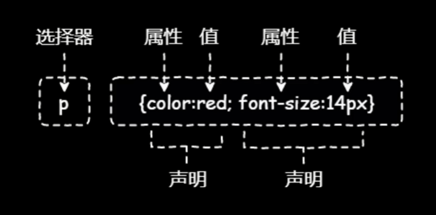

HTML
标签
meta
<meta charset="UTF-8">放在<head></head>标签中，解决中文乱码<meta name="viewport" content="width=device-width, initial-scale=1.0">实现网页尺寸“自适应”。SEO(搜索引擎优化)
<meta name="keyword" content="Web开发学习"><meta name="description" content="这是跟着B站小甲鱼学习记录的内容。">实现网页跳转
<meta http-equiv="refresh" content="5;http://">五秒后刷新进入url指向的的网址。
base
- 位于
<head>标签内，可以用来设置基准URL。
pre 元素
- HTML 字符实体（Character Entities）
定义代码元素
- pre 保存样式
- code 代码样式
- var 定义程序的变量
- kbd 定义用户的输入
- samp 定义程序的输出
引用
- 短小的引用使用 q 元素
- 大段的引用使用 blockquote 元素
- cite 元素用于定义作品的标题
- abbr 元素用于定义简称或者缩写
<p><abbr title="自然语言处理"> NPL</abbr>是一门课程。</p> - dfn元素用来表现定义中的术语
- address 联系信息，显示斜体。
- ruby\rt\rp元素加入拼音
<ruby>魑<rp>(</rp><rt>chi</rt><rp>)</rp></ruby> - bdo元素修改默认文本方向
<bdo dir="ltr"></bdo>
ltr 从左向右
rtl 从右向左
格式化
- strong元素，加粗，表示重要的寓意，b元素也能加粗，但是没有寓意。
- em 倾斜强调， i斜体。
使用css代替b和i。 - del元素和ins元素，删除和下横线。
- s元素定义不太准确的删除。
- u下划线，拼写错误的单词或专有名词。
- mark 标记文本，黄色颜色标注。
- sup上标，sub下标。
- small使指定元素变小。
列表
- ul无序列表 li
<ul><li></li></ul> ol有序列表 li
|属性|值|描述|
|:—|—-|—-:|
|reversed|reversed|规定列表顺序为降序|
|start|number|规定有序列表的起始值|
|type|1,A,a,I，i|规定在列表中使用的标记类型|两个常用的CSS属性
list-style-type 设置列表的标志
square、disc(实心圆)
list-style-image 设置列表自动以标志list-style-image:url("");列表嵌套
- 定义列表 dl dt(项目内容) dd(描述)
表格
1 | <table> |
<thead></thead><tbody></body><tfoot></tfoot>可以包裹<tr><th>。- rollspan属性 跨行
<colgroup><col></col></colgroup>
表单
1 | <form action="" method="post"> |
- target=”_blank”在新的页面打开
- 默认值 value=””
- 自动聚焦 直接在标签中加autofocus
- 禁用元素 disabled 禁止修改，无法跟着表格数据传输
- readonly 虽然无法输入，但是可以提交数据。
<label for="可以是input标签的id值"></label>包裹文本，隐式关联- fieldset元素， 对表单进行包裹。legend元素对包裹的框显示说明。
- select元素
<select><option value=""></option></select><optgroup></optgroup>对很多选项进行分组。 - input元素的type属性
按钮：submit、button、reset
单选框: radio name属性要一致
复选框：checkbox
时间和日期：time\date\month\week\datetine-local
(百分号编码) - 搜索框 search
- 颜色选择框 color
- 图像按钮 image
<input type="image" scr=""> - 把input元素隐藏 hidden
- file 上传文件 设置
enctype="multipart/from-data" accept属性设置文件类型。accept=”image/*”所有的图像类型。 限制上传文件尺寸`
直接添加 multiple属性可以上传多个文件 - 限制数字输入number，限制数字输入范围属性：min、max和step（每一次调整幅度）。
- 数值滚动条 range, value=””初始值。
- 邮箱、电话和网址，email、tel、url，控住输入的准确性,但有限制。
pattern=""用来自定义匹配，用到正则表达式。placehoder=""用来提示说明，required属性，必须填。size=""输入框的大小。maxlength最长输入。 - list属性和datalist元素。可以使用id值互相关联。
1
2
3
4
5
6
7<label>网址:</label> <input type="url" name="url" list="urllist">
<datalist id="urllist">
<option value="http://">网址1</option>
<option value="http://">网址2</option>
<option value="http://">网址3</option>
<datalist> output元素
<output name="x" for="a b"></output>
a和b分别是不同input的id值。<textarea rows="5" cols="10"></textarea>
cols和rows等于字符。
网页的架构
- 原始使用div元素布局网页，但是它是非语义化元素，html5有了语义化结构。语义与实现分离。
- details元素表详情，summary元素表总结。
图片操作
- map元素在图片上建立映射关系，area元素确定区域。
1 | <img src="1.jpg" alt="图片说明" usemap="#book"> |
- picture和source元素，根据窗口大小调整网页大小。
- figcaption元素包裹在figure元素中，用来在图片下面显示图片名字。
在网页中嵌入视频
<video width="宽" height="高" src="视频" controls autoplay muted>备胎</video>在.mp4视频属性-详细信息中看宽和高。- 视频预加载 preload属性，值有auto\none\metadate(加载视频内容)。
- 视频封面
poster="图片url"
嵌入音频
<audio src=".mp3">非常抱歉，本音频不在这个星球上</audio>- track添加字母，vtt格式
1
2
3
4
5
6
7
8
9
10WEBVTT
00:00:09.250 --> 00:00:11.270
大家好
00:00:11.270 --> 00:00:13.010
我是Suria
00:00:03.010 --> 00:00:17.010
今天还是奋斗的一天。default 默认加载1
2
3
4
5
6<video width="宽" height="高" src="视频" controls autoplay muted>
<!-- 添加备胎 -->
<source src=".mp4" type="video/mp4">
<track src="" srclang="zh" label="中文字幕" kind="subtitles" default>
非常抱歉，视频无法播放。
</video>
嵌入一个网页
- 嵌入网页
<iframe src="网址" width="1024px" height="800px" sandbox="">抱歉，您的浏览器不支持iframe</iframe>
sandbox最高程度保护嵌入网页 - 嵌入百度地图
<iframe src="https://map.baidu/" width="1024" height="800px"></iframe>
数值显示
- meta
<meter id="money" high="0.8" low="0.2" optimum="0.6" value="0.2" min="0" max="1"></meter> - progress 进度条
<progress max="1" value="0.8"></progress>
html简化Emmet语法
CSS

样式引用
内联样式(Inline Style)
标签的style属性
内部样式表(Internal style Sheet)
在文档头部通过<style></style>中定义样式。
外部样式表(External Style Sheet)
多个网页同用一种样式，<link rel="stylesheet" type="text/css" herf="">
CSS选择器
基本选择器
- 通用选择器
*。 - 元素选择器
1
2
3h2{
text-align:center;
} - 类选择器
.ClassName。 - id选择器
#IdName。
复合选择器
交集选择器
语法规则：元素选择器类选择器/id选择器{}并集选择器 选择器1，选择器2,{}
后代选择器 选择器1 选择器2 选择器3{}
子元素选择器 选择器1>选择器2{}
匹配直接子元素相邻兄弟选择器 选择器1 + 选择器2{} 效果产生在选择器2指定的内容身上。
通用兄弟选择器 选择器1~选择器2{}
不同于上面的选择器，这个不用选定相邻的选择器。
伪类选择器
- ::firstline-line{} 应用于文本第一行。
- ::first-letter{} 文本的第一个字符。
- ::before 和 ::after分别是在之前和之后插入内容。
1
2
3
4
5
6a::before{
content:url()
}
a::after{
content:"lorem"
} - selection匹配用户选择的部分文本。
动态伪类选择器
:link链接未被访问，:visited链接被访问过，:hover鼠标悬停在链接上方，:active鼠标按下链接的那一刻。顺序，LOVE&HATE
- :focus 选中的样式。
UI伪类选择器
- :enable 可用 :disable 禁用
- :checked 被选中的样式
- :required 和 :option 分别是可选和必选样式
- :default 设置默认元素样式
- :valid :invalid 分别定义有效输入和无效输入。
- :in-range 和 out-range 来这是用户输入数字在范围内、不在范围内。
- read-only 和 read-wirte 只读和可写。
结构伪类选择器
- :root 根元素样式
- :empty 空元素样式（很少用）
- :first-child 第一个子元素样式 :last-child最后一个子元素，如果效果没有出来，可以改成:last-of-type。
- :only-child 父元素的唯一子元素，匹配独生子；only-of-type,匹配父元素下唯一类型子元素。
- :first-of-type父元素下的子元素。(尝试用用。)
伪元素选择器
属性选择器
JavaScript
defer属性
- 实现延迟执行脚本
- 只能用于外部脚本文件
1
2
3
4
5
6
7
8
9
10
11
12
13
<html>
<head>
<meta charset="utf-8">
<meta name="viewpoint" content="width=device-width, initial-scale=1.0">
<meta name="author" content="Suria">
<script type="text/javascript" src="t1.js" defer></script>
</head>
<body>
<p>你好呀</p>
<p>Hello Web</p>
</body>
</html>1
2
3
4
5var x= document.getElementsByTagName("p");
for (var i =0; i<x.length; i++)
{
x[i].innerText = "我是Suria";
}async属性
- 异步执行脚本
noscript